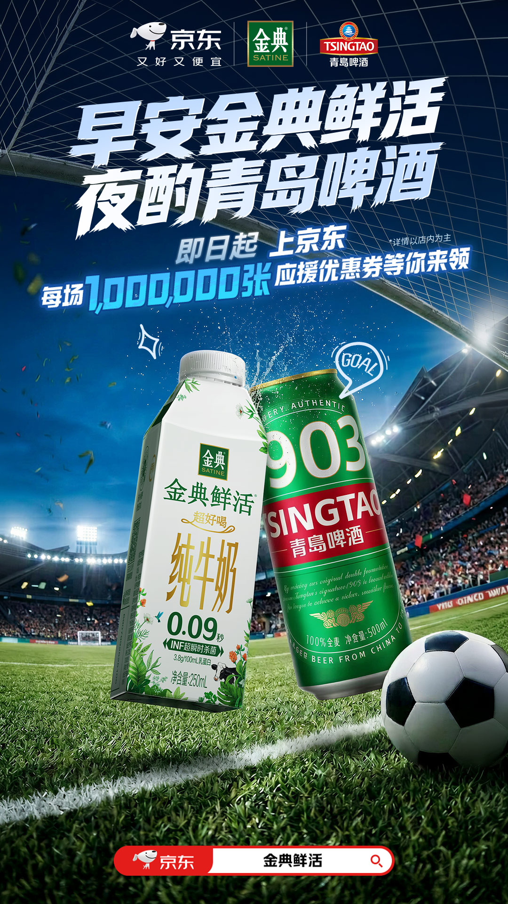
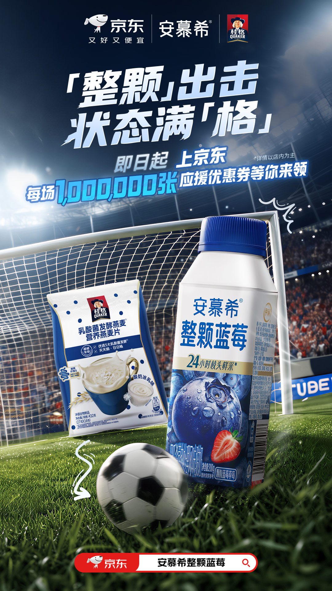

案例发生了什么




伊利没有把这次动作做成单一的“伊利 × 京东”联名，而是在京东牵头下，调用母品牌和子品牌矩阵，分别与海尔、青岛啤酒、桂格组成三组“观赛搭子 CP”。每组搭子都对应一个真实的看球任务，避免多个品牌只在同一张海报里机械并列。
第一组是伊利纯牛奶 × 海尔“清凉助威搭子”：牛奶与制冷家电共同服务居家观赛；第二组是金典鲜活 × 青岛啤酒“昼夜陪伴搭子”：用“早安金典鲜活、夜酌青岛啤酒”覆盖跨时区赛事带来的清晨补给和深夜微醺；第三组是安慕希 × 桂格“能量续航搭子”：整颗蓝莓酸奶与发酵燕麦共同承接长时间观赛的能量需求。
传播端以三支拟人化短片和三组联名海报解释 CP 关系；转化端在京东发放每场 100 万张助威优惠券，并把用户导向旗舰店和活动专区。完整链路是“先找观赛场景—再配功能互补品牌—用内容把关系讲明白—以优惠券和站内货架完成购买”。
MARKETING KNOWLEDGE ROUTER · 营销知识路由器
营销启发卡
用三张卡片保留最值得记住、讨论和迁移的部分。 卡片底部按主题连接全站相关案例、经典方法与深度文章。
核心动作
先按“居家观赛、昼夜陪伴、能量续航”定义任务，再选择功能互补的品牌，而不是先凑品牌名单；用三组 CP 名称与拟人化短片降低跨品类联名的解释成本，让每组产品都承担清晰角色。
传播与商业机制
以“跨品牌联名 / 场景化商品组合 / 京东电商转化”为资源起点，进入球星/球队/授权内容、电商、门店、大小屏与海外渠道；结果优先观察搜索、到店、商品成交、会员沉淀与重点海外市场认知，不把曝光直接等同于销售。
可复用的方法
多品牌联名的关键不是参与品牌越多越好，而是每个伙伴都解决一个明确场景问题，并共享同一条从内容到交易的承接链路。
适用条件、风险与证据
- 先明确目标是国内动销、出海认知、渠道关系还是授权商品，而不是全部都做。
- 球星或球队的赛果只是放大器，必须准备常态内容和转化出口。
- 对授权范围、地域、肖像和商品库存建立可追溯台账。
核验记录可将已核动作作为内部判断基础；涉及投放规模、销售结果或合作细则时，仍应以品牌、平台或权利方的一手发布为准。 当前记录：已核（SocialBeta 项目报道）；素材状态：已归档 1 张站内承接总览与 3 张联名海报。
资料与来源
官方资料、结果数据与下一步
已验证事实
- SocialBeta 项目页确认：在京东牵头下，伊利以母品牌和子品牌矩阵，分别联动海尔、青岛啤酒、桂格，形成三组“观赛搭子 CP”，而不是只做一次伊利与京东的双品牌联名。
- 三组关系分别对应清晰任务：伊利纯牛奶 × 海尔承接居家观赛与清凉助威；金典鲜活 × 青岛啤酒覆盖清晨补给与深夜微醺；安慕希 × 桂格承接长时间观赛的能量续航。
- 本页以一张京东站内承接总览和三张联名海报复现完整动作；三张海报取自 v3.0 汇报版嵌入的项目原图，站内总览取自 SocialBeta 项目页，均回链可追溯来源。
- 最新版 PPT 将链路概括为“场景定搭子—三支拟人短片—每场百万助威券—旗舰店／专区下单”，网站已按这一结构重写案例叙事。
可追溯的结果
- “每场 100 万张助威优惠券”是活动机制和可领取规模，不等于实际领取量、核销量或成交量；目前未取得三组 CP 的领券率、核销率、连带购买、店铺新客或 GMV。
- 现有资料能够验证品牌组合、创意物料和京东转化入口，但不能据此判断哪一组 CP 的传播或销售贡献最高。
原始来源
来源链接优先指向品牌、权利方或持权媒体官方页面；品牌自述数据按原始定义记录，不视作独立审计结果。